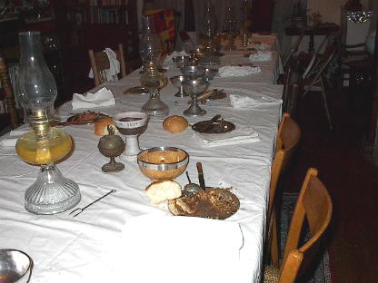
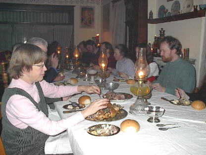
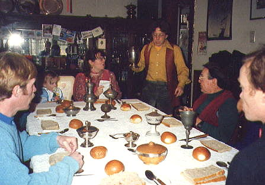

|
The Hatherleigh Fire Festival Medieval Dinners The village of Hatherleigh, Devon, is the setting of an ancient annual custom: every year, in early November, a festival is held marked by the rolling of barrels of flaming tar down the long, steep main street of the village, onto a bonfire in the square at the bottom of the hill, followed by general festivity. This has been occurring “time out of mind,” and is a source of local pride and, recently, revenue from the numerous “folk tourists” who make the trip to witness this exciting and dangerous event. I and some friends of mine in the Minnesota English traditional folk community (Morris Dancers and Mummers and such like), visited Hatherleigh, and made friends with its local Morris team. We felt a strong connection with them, and remained in touch for many years. In 1987, as a housewarming party, I held a mini-fire festival in November at my home in Minneapolis, where we lit the entire house with candles and kerosene lamps. It was a delightful occasion. The following November, we decided to repeat our fire festival, only we made it a large, sit-down medieval dinner, lit by candles and kerosene. I had just acquired my own copy of Two Fifteenth-Century Cookery-Books, and had begun to prepare my own adaptations directly from this primary source. (Up to this point I had relied on To the King's Taste, Fabulous Feasts, and a pamphlet by Maggie Black, Food and Cooking in Medieval Britain.) Using recipes from these sources, and two original adaptations of my own, I arranged a coordinated potluck, giving out specific recipes to those who said they would attend. This dinner was very successful, and copies of the recipes were requested by several of the guests. This meant I had to write up redactions of my adaptations, and this was beginnings of my medieval recipe collection, A Newe Boke of Olde Cokery. It also resulted in the Hatherleigh Fire Festival Medieval Dinner becoming an annual event in my community. They have become increasingly sophisticated as my knowledge of medieval cuisine and dining practices has grown. They also became very popular; at the largest one, we sat thirty people around three tables pushed together, spilling out of my dining room and into the living room. I realize this is nothing compared to some SCA feasts where hundreds of diners are served, but this was a major banquet for a small dining room. So, in order to accommodate everyone who wanted to be part of the medieval dining experience, we instituted a second annual dinner, at Mid-Lent. At these dinners, we try to maintain medieval Lenten food restrictions, and ban flesh and eggs (although we do cheat, and have cheese and butter). I also try to have enough period vegetarian dishes for the benefit of my vegetarian friends.
These dinners are also an excuse to use and show off my extensive collection of reproduction medieval tableware.  This ranges from chargers and deep serving dishes, to standing covered cups, a silver rimmed mazer bowl, and reproduction “ficulate” spoons.  I now have enough period spoons, knives and little silver plates for up to thirty guests. (I blush to admit that many of them sit, however, on metal folding chairs.) I insist on period table manners (clean hands, no forks, no fingers in the salt), and offer the option of sharing drinking vessels with your neighbors.  Although many guests dress up, period garb is optional; I like to say that the table is in garb. In addition to these big dinner parties, I also hold smaller dinners,
usually as part of our Christmas celebrations. At these I use bread trenchers
instead of little plates, and sometimes try to recreate specific table
settings from medieval illuminations. One of the better dinners of this
sort was a Dinner on the Feast of the Holy Trinity,
where I not only recreated the third course from an historic medieval dinner...
Once, I made a Cockentrice, but found, as impressive as it looked, it was a lot of work and expense for very little meat. I try to include new recipes every year, but many of the dishes have become favorites with the guests, and they are requested again and again, and would be missed if they were excluded. After fifteen years, the Hatherleigh Fire Festival and Mid-Lent Medieval Dinners are much anticipated events among my circle of friends and associates. Here follow a few selected menus from past dinners, with sources and links for many of the dishes.
Hatherleigh Fire Festival Dinner, 1994 FIRST COURSE Mortreus
de Chare – MS Harleian 4016
SECOND COURSE Tayloures
- MS Harleian 279
Soteltie: The Arms of Cadwallader in Frosted Marzipan
Hatherleigh Fire Festival, 2002 FIRST COURSE Mortreus
de Chare – MS Harleian 4016
SECOND COURSE Peeres in Confyt - Forme
of Cury, To the King’s Taste
Mid-Lent, 1999 FIRST COURSE Buttered Worttes - MS Harleian 4016, Food and
Cooking in Medieval Britain
SECOND COURSE Puree of Peas – Forme of Cury, To the King’s
Taste
|


 A
Boke of Gode Cookery
A
Boke of Gode Cookery Recipes
from A Newe Boke of Olde Cokery
Recipes
from A Newe Boke of Olde Cokery
The Hatherleigh Fire Festival Medieval Dinners ©
2003 Rudd Rayfield
This page © 2004 James L. Matterer
 A
Newe Boke of Olde Cokery
A
Newe Boke of Olde Cokery
ALL
GODE COOKERY RECIPES
Please visit The Gode Cookery Bookshop | This site hosted by Visual Presence